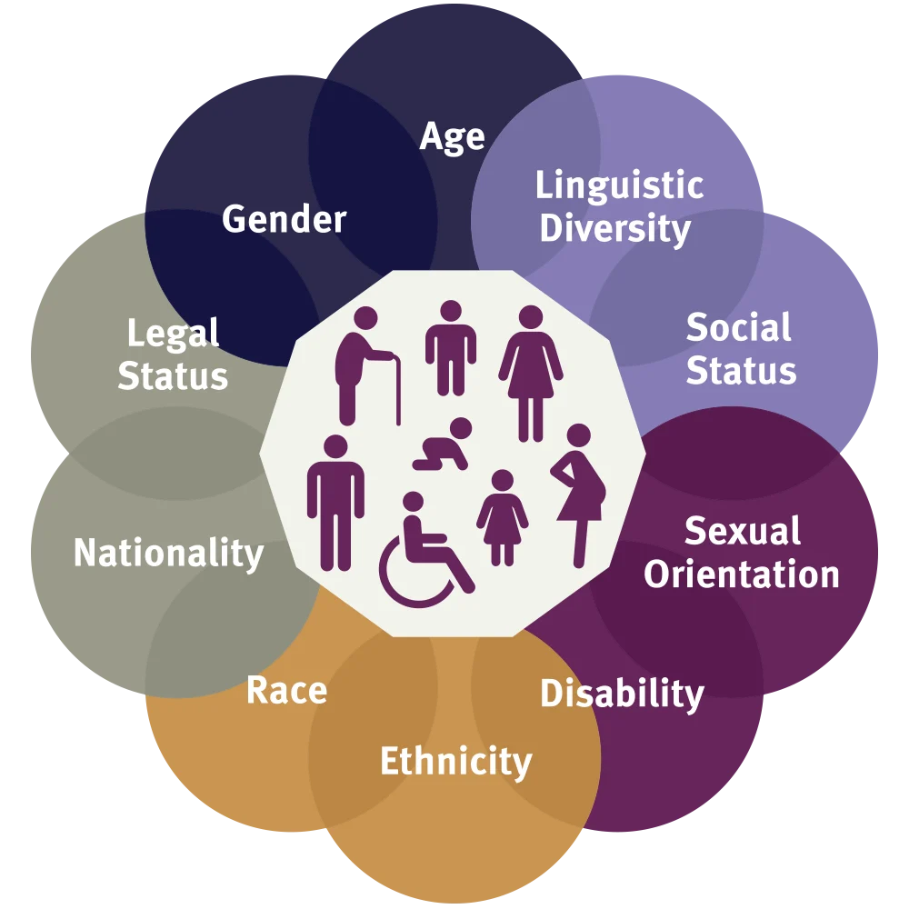

Welcome to our LIS500 Project Website
Exploring the influence of implicit biases and intersectionality in technology.

LIS500 Prepares students to analyze media portrayals of race, gender, and computing while developing web skills.
This is our project #2 website. Here are some resources to get started:
- LIS Course List
- Prof. Reginold Royston's LIS500 Page
- LIS500 Public Introduction Video
View the LIS500 course description, along with all other LIS courses.
View Professor Royston's description of the course and view sample work.
Professor Royston's LIS500 introduction video, publicly available on the UW Madison Mediaspace.